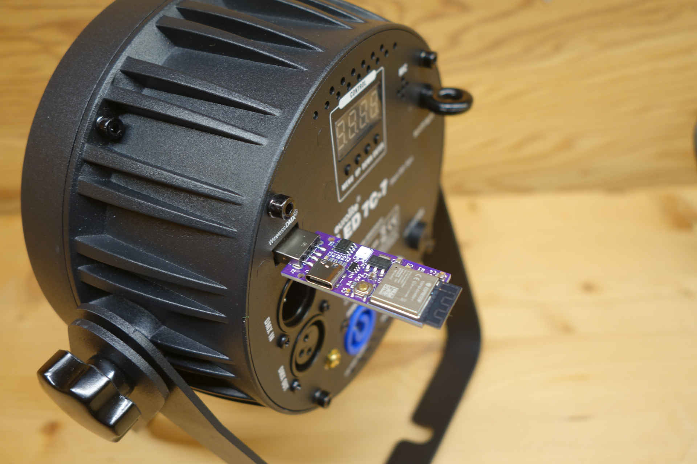

Trance
Ein Adapter um Lichtanlagenelemente per W-LAN in das Artnet netzwerk zu verbinden. Die gesamten Entwürfe und Dokumentation sind auf Github frei zugänglich.
Dokumentation auf Githubusb-dmx
Das Trance Modell mit dem Namen usb-dmx ist ein Gerät welches statt eines DIN Anschlusses einen USB anschluss besitzt. Dieser ist kein Standartmässiger USB anschluss, nämlich wird darüber DMX übertragen. Dieses Gerät ist mit einigen der neuen Eurolite Geräte kompatibel.
Die nun dritte revision des Gerätes ist die erste vollends funktionstüchtige. Hier ein paar Bilder dieses aktuellen Prototyps.

